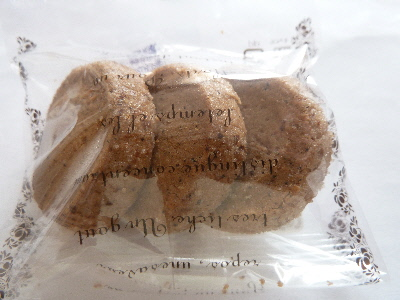

シェブランのエスプレッソクッキー
2018/05/12
これって何と一緒に食べるといいんでしょうね。

エスプレッソ味のクッキーはコーヒーを飲みながら食べるのかな。
ん。そうなるとクッキーに味が付いてる必要ない？
どうしよう。
結局何も飲まずにクッキーだけ食べました。
やさしい甘さと、エスプレッソの苦みが美味しかったです。後を引かない味だったので、飲み物はなくてもよかったです。
島根県松江市東奥谷町358-1
2018/05/12
これって何と一緒に食べるといいんでしょうね。

エスプレッソ味のクッキーはコーヒーを飲みながら食べるのかな。
ん。そうなるとクッキーに味が付いてる必要ない？
どうしよう。
結局何も飲まずにクッキーだけ食べました。
やさしい甘さと、エスプレッソの苦みが美味しかったです。後を引かない味だったので、飲み物はなくてもよかったです。
2007/05/04
シェ・ブラン洋菓子店の城北店で、モンブランを買いました。
栗のクリームに、渋皮の渋味がちょっとあって味わい深いです。渋味があるおかげで、甘いだけじゃない栗らしい味がして好印象でした。大人な味ですね。
渋いクリームの中には生クリームも大目に入っていますし、土台にはチョコが入っていますので、渋さと甘さがいいバランスになってました。
お腹にちょっと重たかったですけど、美味しかったので満足でした。